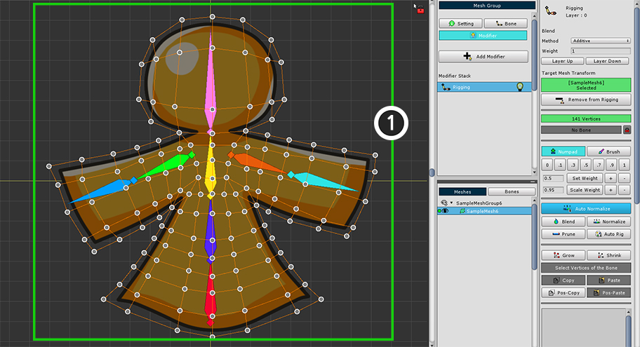
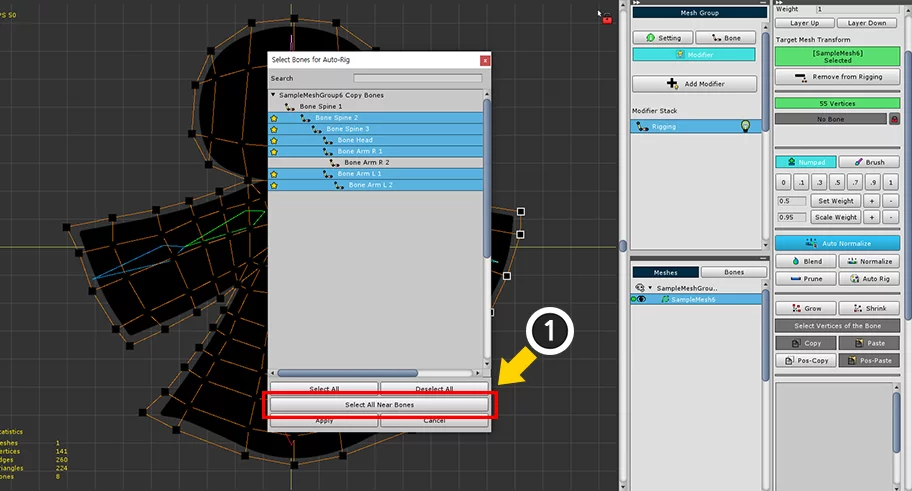

AnyPortrait > マニュアル > 様々な場合でのリギング
様々な場合でのリギング
1.2.2
リギング作業は、多くのテストと修正作業を通しクオリティを向上させなければならな作業です。
専門家の経験とノウハウが要求される作業であるため、様々なフォーラムを通じてリギングに関する情報を得ることができます。
このページは、リギング作業に困難を経験する方のために、いくつかの場合について、どのようリギングをすべきかを説明します。
また、それぞれの場合についてAnyPortraitの機能をどのように使用するか、より詳細に説明します。
関節の位置による違い
2つまたはそれ以上の骨が接続された関節は、リギングにおいて最も重要な部位です。
どのように重みを設定するかによって、メッシュが変形されている様子が大きく異なるためです。
ここで重みの分布ほど重要なのが、「関節の位置」です。
「イメージの中心から骨が接続か」、または「端から骨が接続されて、関節を構成するか」は、非常に重要な問題です。
これは正解がなく、どのようなイメージに関節を作るかによって、皆さんが直接比較して決定すれば良いです。

まず、関節が画像の中心に位置する場合です。
この場合は、関節が内側、外側に動く場合に適しています。
関節の内側と外側の方が均一に変形されます。

第二の場合は、関節が画像の外側に位置している場合です。
関節の内側が変形がかなり大きく発生するのに対し、外側は比較的少なく変形されます。
一見この方式は、変形が激しいが、人と動物の多くの関節に（腕、膝、指など）は、実際にこのようになっています。
（直接自分の指と膝に触れて、骨の位置を確認してみましょう。）
この方法で、関節を構成する関節が折られたとき、皮膚が少し膨らんだながら折ること描写することができます。

最後の場合は、関節が画像の内側に位置している場合です。
関節の内側の変形が佳作少なく、外側の変形が大きくなる特性があります。
画像が圧縮されている部位が少ないため、画像の大きさが減少することを防止するのに役立ちます。
横顔の人のイメージの場合には、骨盤と足の連結部位で、この方法が使用されることがあります。
上記の3つの場合は、重みの分布が緩やかになっている場合です。
しかし、人や動物の画像では、関節の動作が複雑なので、もう少し手作業で設定された重みが求められます。
上記の場合を修正して、次のようにリギングすることができます。

重みを、上記の画像のように修正しました。
関節の内側部位の重みがより急激に変化するのを見ることができます。
「Blend」機能を少なく使用して、直接重みを増減して、上記のように修正することができます。
このように重みを変更した場合の結果を、以下の画像で確認することができます。

前の説明と同様に、関節の位置に応じて、それぞれどのように適用されるか比較してみましょう。
1) 関節が「中心」に位置する場合
: 関節の内側の画像が少し折ることを示します。
人や動物のようなキャラクターのほとんどの関節に適用するお勧めします。
2) 関節が「外側」に位置する場合
: 関節の内側が非常に多く変形されながら画像が多少奇妙に思えることができます。
人や動物の関節のうち、関節が折られたとき、皮膚が膨らんで折る場合（腕、膝、指など）、この方法はかなり効果的です。
メッシュが異常に出力されることを防ぐために、頂点の「Z-Depth」を変更する必要があります。 （関連ページ）
3) 関節が「内側」に位置する場合
: 重み分布方式が変わっても結果は大きく変わりません。
連続した複数の骨で構成された場合

ロープやスカーフ、長い髪のように複数の連続した骨を対象にリギングをする必要がある場合があります。
特に、対象の動きが非常に柔軟で、特定の場所に関節が形成されることがない場合は重みを割り当てすることは容易ではありません。
この場合、「Blend」機能を利用することが非常に効果的です。
次の方法でリギングをみましょう。

開始がされている最初の骨と頂点を選択します。
頂点を選択すると、次のの骨の頂点にまで十分に多く選択することもされます。
続いて、次の骨と頂点を選択して、重みを設定します。
このとき、すべての場合に重み値に「1」を割り当てます。
この段階から、頂点ごとに1つの重みを複雑に割り当てることは非常に面倒で、良い結果にもすることができません。

「ポーズテスト」機能を利用して、リギング結果を確認してみましょう。
当然のことながら重み値は、それぞれの骨に「1」を入力されているので、上記のように不思議見られることです。

「Blend」機能を使ってみましょう。
最初の骨から順次リギングを変更します。
(1) 頂点を選択します。今回はかなり広い範囲の頂点を選択します。
(2) 最初の骨を選択します。

(3) 「Blend」ボタンを数回繰り返して押します。
まるでブラー効果を適用したかのように重みが均等に分布されます。

第二の骨にも同じように作業をします。
(4) 頂点を選択します。今回もかなり広い範囲の頂点を選択します。
(5) 第二の骨を選択します。
(6) 「Blend」ボタンを数回押します。


同じように、最後の骨まで継続して「Blend」機能を実行します。
この作業をすると、重みが均等に分布したかのように見えます。

重みを確認してみる、両端に位置する骨の重みはかなり大きいが、中間の骨の重みは少ない方です。
中間の骨の重みが少なく適用されると、かなり柔軟な動きをすることができます。
必要に応じて重みを増減するか、「Blend」の適用回数を調節してみましょう。

再び「ポーズテスト」をオンにして、複雑な関節の動きにメッシュがかなり自然に変形されることを見ることができます。
ブラシモード

AnyPortraitの「ブラシモード」がオンの状態で、マウスを利用して、重みを設定することができます。
今回は上記のように、大きな骨と小さな骨二つに構成された例を対象に説明します。
小さな二つの骨に画像の両耳の部分を接続するためには、この場合は、「ブラシモード」で作業をすると、かなり便利です。

(1) すべての頂点を選択します。
(2) 基本となる骨を選択します。
(3) 「1」の重みを割り当てます。

(1) 「Brush」タブを選択すると、ブラシツールが表示されます。

ブラシモードのUIです。
1. Numpadタブ、Brushタブ
: 既存のテンキースタイルの重みツールとブラシモードを切り替えます。
2. 「Add」、「Multiply」、「Blur」ブラシ
: 加算演算がされているブラシ、乗算演算がされているブラシ、周辺との値を緩やかにするブラーブラシツールです。
それぞれのショートカットキーは「 J 、 K 、 L 」です。
ブラシモードを終了するには、マウスの右クリックをします。
3. Radius
: ブラシの半径です。ショートカット「 [ 、 ] 」サイズを増減することができます。
4. Intensity
: ブラシの強度です。ショートカットキー「 < 、 > 」で強度を増減することができます。

(1) 左の骨を選択します。 （頂点が選択された状態である必要があります。）
(2) 「Add」ブラシを選択します。 （ J ）
(3) マウスの周りに円形のブラシが表示されます。

(1) 「Radius」の値を増加させます。 （ ] ）
(2) ブラシのサイズが大きくなったことを見ることができます。

(3) マウスをクリックした状態でこすると、頂点の重みのうち、現在の骨の値が徐々に増加することを見ることができます。

反対側の骨にも同じことをしてみましょう。
(1) マウス右クリックをして、ブラシモードをオフにして頂点が選択された状態で、右の骨を選択します。
(2) 「Add」ブラシを選択します。
(3) マウスをクリックしてムンジルロジュ反対側の耳も重みが増加します。

「Multiply」ブラシを使用すると、重みの値を細かく編集することが可能です。
(1) 骨と頂点が選択された状態で、「Multiply」ブラシを選択します。
(2) ブラシで頂点をこする重みが率によって徐々に増減することがわかります。

「Blur」ブラシを使用すると、重みの値が緩やかに分布するようにすることができます。
「Blend」の機能と似ています。
(1) 骨と頂点が選択された状態で、「Blur」ブラシを選択します。
(2) ブラシで頂点をこする重みが周辺の頂点の重みと徐々に同様になります。
結果的に重みが緩やかに分布されていることを見ることができます。

ポーズテストを通じてリギング結果を確認してみましょう。
このように、ブラシツールを利用して簡単にリギング作業を行うことができます。
「ロック機能」を利用して、重みが変わることを防止
骨が3つ以上の接続された部位では、リギング作業が非常に複雑になります。
特にいくつかの骨に対して、まずリギングをするかによって結果が異なることがあることが最も困難な点です。
重みの値は、後で選択された骨の影響を受けるため、まず作業した結果が歪みやすいです。
v1.1.8で追加された「ロック機能」を利用すれば、これらの問題を少しでも防ぐことができます。

今回の例の形態は、3つの骨とV字型のイメージです。
画像の中央には、3つの骨を対象にリギングする必要がありますので、作業が多少複雑になることができます。

簡単にリギングをしてみました。
予想通りのうちの3つの骨で頂点の重みが複雑に割り当てられたことを見ることができます。

「Bone Root」に関する重み分布です。
下の部分を基準に左右に均一に分布した状態です。

左右の骨の重みも互いに同様の分布された。
今ここの右側に位置する「Bone R1」の重みを増加させてみましょう。
ただし、下にある「Bone Root」の重みはそのまま維持するようにします。

(1) 重みを編集を制限する骨を選択します。
(2) 「ロックボタン」を押します。
(3) 選択された骨は、すべての頂点に対して重みを編集することが制限され、これはリギング情報リストの「アイコン」で確認することができます。
ロック機能は、次のような特徴があります。
1) 編集モードが終了すると、すべてのロック機能は解除されます。
2) ロック機能は、「他の骨」によってロックされ、骨の重みが変わることを防止する機能です。
3) ロック状態であっても、2)の理由から、該当の骨選択された状態では、重みが編集になります。
4) 「Blend」や「Normalize」によって値の変化が少しあります。
ロック機能をテストしてみましょう。
(1) 右の骨を選択して、かなり広い範囲の頂点を選択します。
(2) 「+」ボタンを押して重みを増加させました。

左側の骨の重みは大幅に減ったのに対し、
ロック機能がオンになって下の骨の重みはそのまま維持されることを見ることができます。
重なったメッシュにリギング重みをコピー
複数のメッシュがネストされた場合、重み値をコピーする機能は非常に重宝します。
重みの値をコピーすると、不必要な作業を減らすことができます。
また、重ねているメッシュの動きがぎこちなくなることを防止することができます。
既存の重みコピー機能は、1つの頂点の重み値を、他の1つの頂点にコピーして貼り付けるだけサポートします。
しかし、v1.1.8に追加された「位置ベースのコピー（Pos-Copy / Paste）」を利用すれば、複数の頂点のリギング情報を、他の多数の頂点に一括してコピーすることが可能です。
この例では、二つのメッシュが重なっています。
(1)のメッシュに(2)のメッシュが服や鎧のように装着された状態です。
一度内側のメッシュに対してリギング作業を実行します。
多くの頂点があり、重みが緩やかに分布しているので、すべての重みの値を他のメッシュに同じようにリセットすることは非常に難しい作業である。

この頂点の重みの値をコピーしてみましょう。
(1) 可能な限り多くの頂点を選択します。ここのすべての頂点を選択しました。
(2) 「Pos-Copy」ボタンを押します。
ロケーションベースのコピー機能は、保存された頂点の位置に基づいて、対象の重みを再補間して貼り付ける方法です。
したがって、多くの数の頂点を格納するほど、より正確に重みを貼り付けることができます。

上部のメッシュを見えるようにします。
(1) メッシュを選択します。
(2) 「Add to Rigging」ボタンを押してリギングモディファイヤに追加します。

(1) すべての頂点を選択します。
(2) 「Pos-Paste」ボタンを押して保存された重みを貼り付けます。

重みがすべての頂点にコピーされました。
既存のメッシュとほぼ同じように重みが分布されたことを見ることができます。

「ポーズテスト」機能で骨を動かしてみると、二つのメッシュが同期されて動くのを見ることができます。
Auto Rig
「Auto Rig」機能を使用すると、選択された頂点に自動的に重みを設定することが可能です。
この機能は、v1.1.8で大幅に改善され、非常に便利で強力な機能として開発されました。
「Auto Rig」機能は、次のような特徴があります。
- 関節に接続された骨と骨の間の重みは、緩やかに分布されているが、互いに直接接続されていない骨には多少急激に重みが分布するように設定されます。
- 選択された頂点にのみ「Auto Rig」機能が実行されます。
- 骨の重みが適用される範囲は、頂点の分布に応じて自動的に決定され、選択されていない頂点も演算に参考になります。
- 選択された頂点に既に重みがある場合には、骨の重み範囲が変わり、より正確に演算することができます。
次の例を通した「Auto Rig」機能を使用する方法を確認してみましょう。

上記のような例では、「Auto Rig」機能を利用して、簡単にリギングをみましょう。

(1) 頂点を選択します。ここのすべての頂点を対象に適用してみましょう。
(1) 「Auto Rig」ボタンを押します。
(2) 選択された頂点に重みが自動的に割り当てられます。

「ポーズテスト」機能を利用して、結果を確認してみましょう。
多くの骨が複雑に構成されても、全体的にリギングの結果がお勧めです。
しかし、いくつかの頂点が異常に設定されたかのように見えます。
「Auto Rig」の特性を活用すれば、上記のようなエラーをさらに減らして全体の作業の効率をより高めることができます。

「Auto Rig」機能を使用する前の状態に復元します。
上記の「Auto Rigの特性」の中で次の項目を使用することです。
「- 選択された頂点に既に重みがある場合には、骨の重み範囲が変わり、より正確に演算することができます。」
この特性を利用すれば、Auto Rigの結果がより正確に作成されます。
(1) 主要部位の頂点と、「最も近い骨」を選択します。
(2) 「1」の値の重みを割り当てます。
この作業をすべての骨に対して実行する必要がなく、エラーが発生しな頂点と骨だけとなります。
これらの操作は、正確には不要です。
再び「Auto Rig」ボタンを押してみましょう。
上記同様に、自動的にリギングが完了したことを見ることができます。
実際の結果が向上していることを確認してみましょう。
「ポーズテスト」機能を利用して骨を動かし、結果を確認してみましょう。
以前より奇妙な部分が減って、かなり良い結果を見ることができます。
「Auto Rig」機能は、作業の効率を高める目的で使用されます。
後に、追加の補正作業を通しリギングの品質をさらに向上させることをお勧めします。
骨を選択して、Auto Rig機能利用
Auto Rig機能は、すべての骨を対象にリギングを演算します。
したがって、たまに不必要な骨が頂点と接続されている場合に発生します。
Auto Rig機能が適用される骨を選択して、これらの問題を防ぎ、より正確かつ迅速にリギングを行うことができます。

Riggingモディファイヤが適用されたメッシュの頂点を選択した状態です。
(1) 「 Ctrl （Mac OSでは Command ）」を押しながら「Auto Rigボタン」を押します。

骨を選択できるダイアログが表示されます。
1. Search : 名前を検索して、骨を検索します。
2. 骨リスト : リギングの対象となる骨を選択することができます。 「Shiftキー」を押して複数の骨を選択することができます。
3. 星形のアイコン : 選択された頂点と近くにいる骨です。
4. Select All / Deselect Allボタン : すべての骨を選択するか、選択を解除します。
5. Select All Near Bonesボタン : 選択された頂点と近い骨（星形のアイコンがある骨）を選択します。
6. Applyボタン : 選択された骨を対象にAuto Rig機能を実行します。
7. Cancelボタン : 操作をキャンセルします。

「Auto Rig」をするために、骨を選択して適用してみましょう。
(1) 「Select All Near Bonesボタン」を押します。
星形のアイコンがある骨が選択されます。

(2) Shift を押しながらクリックして追加したり、除外する骨を選択します。
(3) 「Applyボタン」を押します。
選択された骨を対象にAuto Rig機能が適用されました。
骨を選択せずにAuto Rigを実行した結果と比較すると、リギングが異なって適用されたことを見ることができます。
注意
骨を選択して、Auto Rig機能を実行すると、次のの特徴に応じてリギングが計算されます。
- 選択された骨はAuto Rigの対象となるだけなので、選択されたすべての骨がすべての頂点に接続されているわけではない。
- もし、その頂点に選択されていない他の骨の重みが適用された状態であれば、その骨を含むAuto Rig機能が実行されます。